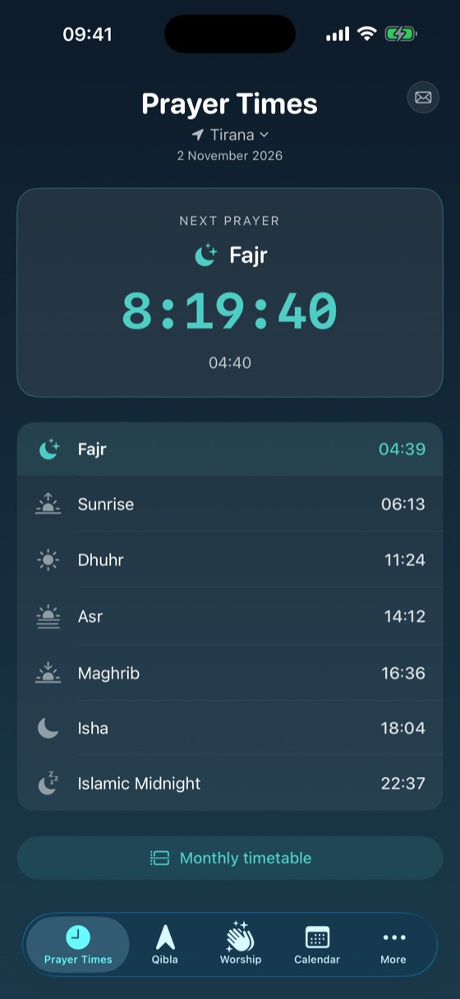
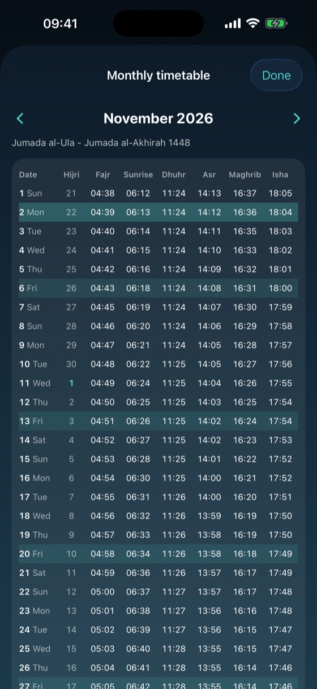
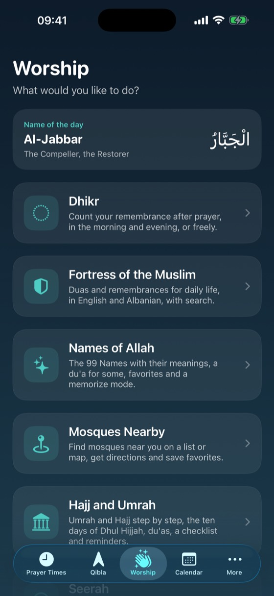
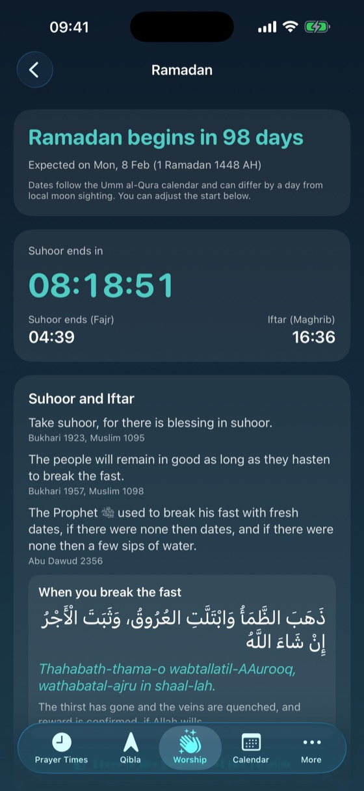
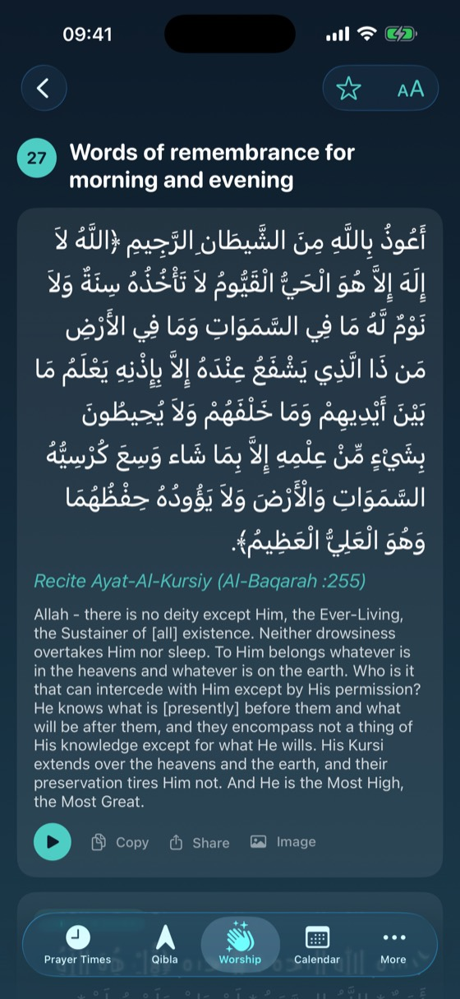
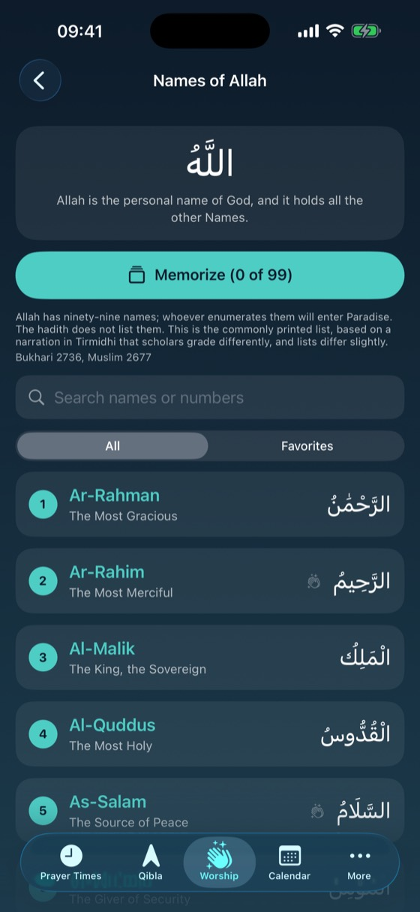
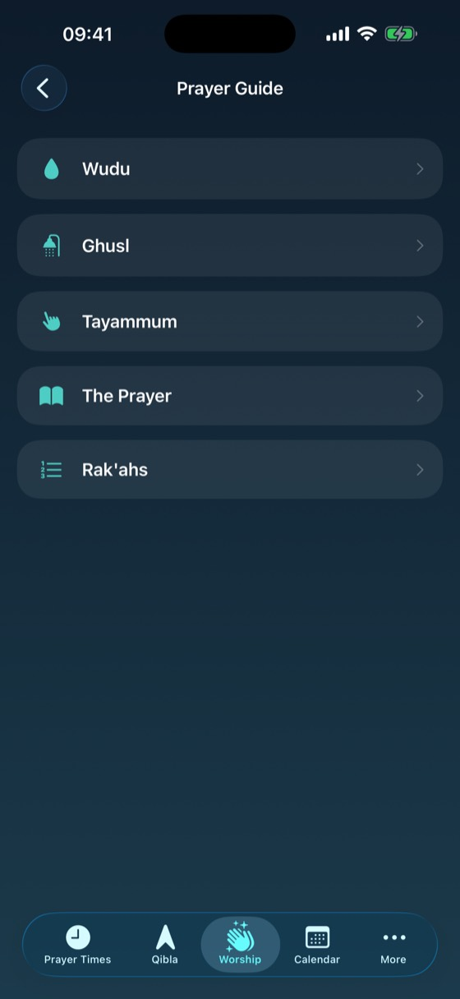
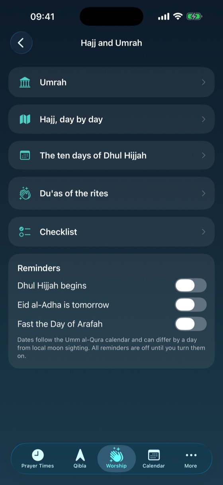
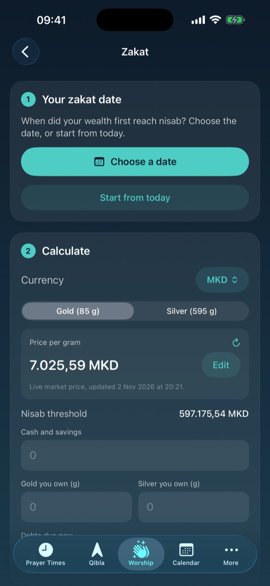
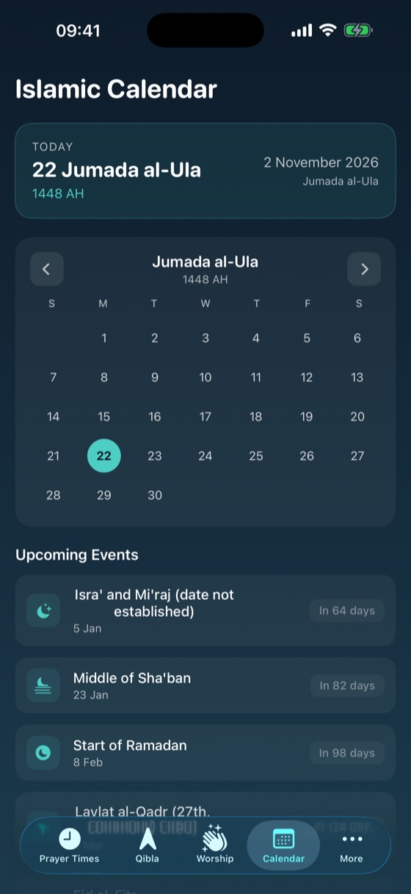

Prayer Times: Islam
Accurate prayer times for where you are, and the everyday tools of worship in one place. No ads, no accounts and no tracking.










What is inside
Prayer times
Fajr, Sunrise, Dhuhr, Asr, Maghrib and Isha for your location or a city you choose. Muslim World League, Umm al-Qura and Diyanet methods, standard or Hanafi Asr, and minute adjustments for each prayer. Notifications with a choice of adhan sounds, and a monthly timetable you can share.
Qibla
A compass that points to the Kaaba from where you are.
Widgets, Watch and Siri
Home Screen and Lock Screen widgets, Control Center buttons, a countdown to the next prayer on your Lock Screen and in the Dynamic Island, an Apple Watch app with complications, and Siri for the next prayer, iftar, suhoor and the Qibla direction.
Worship
Fortress of the Muslim in English and Albanian with recordings, the Names of Allah, a step by step prayer guide, a Hajj and Umrah guide, the Seerah timeline, a dhikr counter, adhkar reminders and a sunnah prayers checklist.
Ramadan
Suhoor and iftar countdown, the last ten nights, a Quran reading plan, Zakat al-Fitr and an Eid page.
Zakat and calendar
Track your zakat date by the Hijri calendar, keep a payment log and calculate with live gold and silver prices or your own. An Islamic calendar following Umm al-Qura with the main days marked.
Languages
English and Albanian, with a language switch inside the app.
Privacy
Your location stays on your device. There are no accounts, no ads and no analytics. Read the privacy policy.
Times are calculated on your device and can differ by a minute or two from your local mosque's timetable. Use the adjustments to match it.